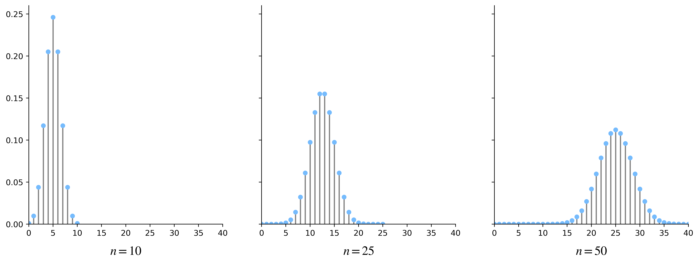
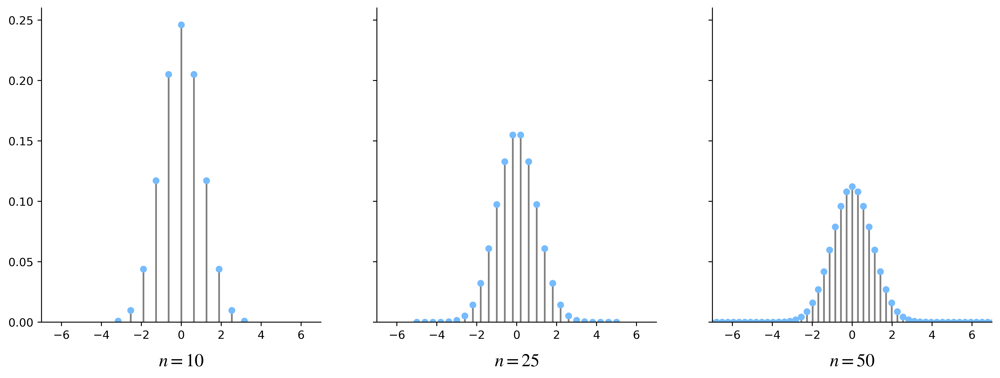
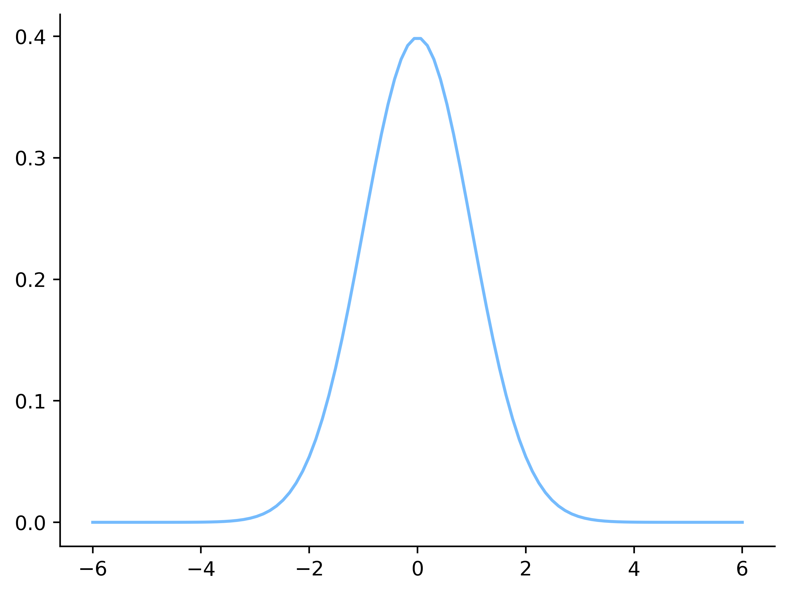
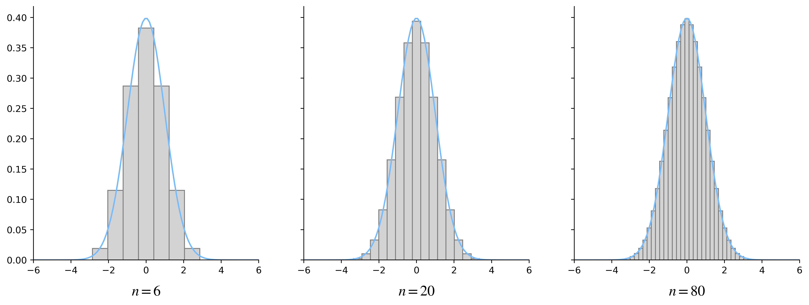
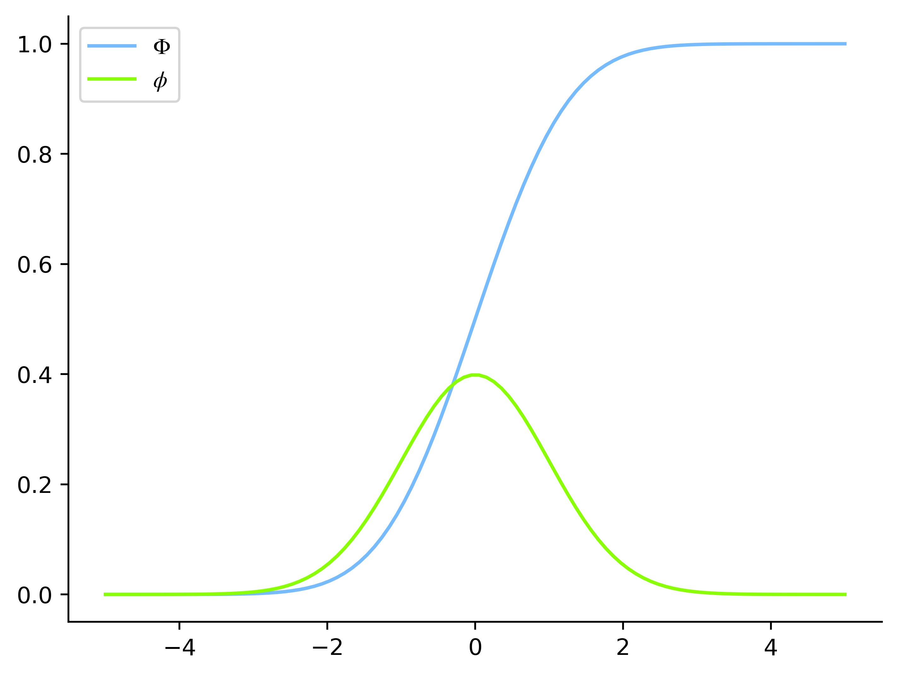
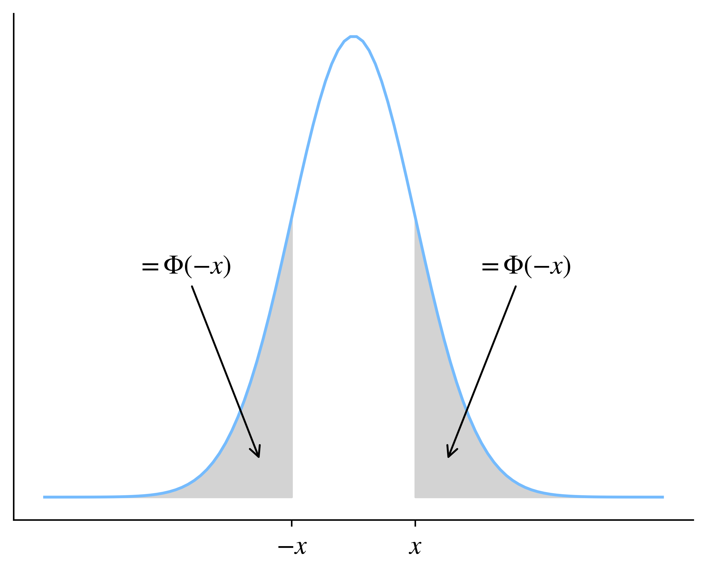
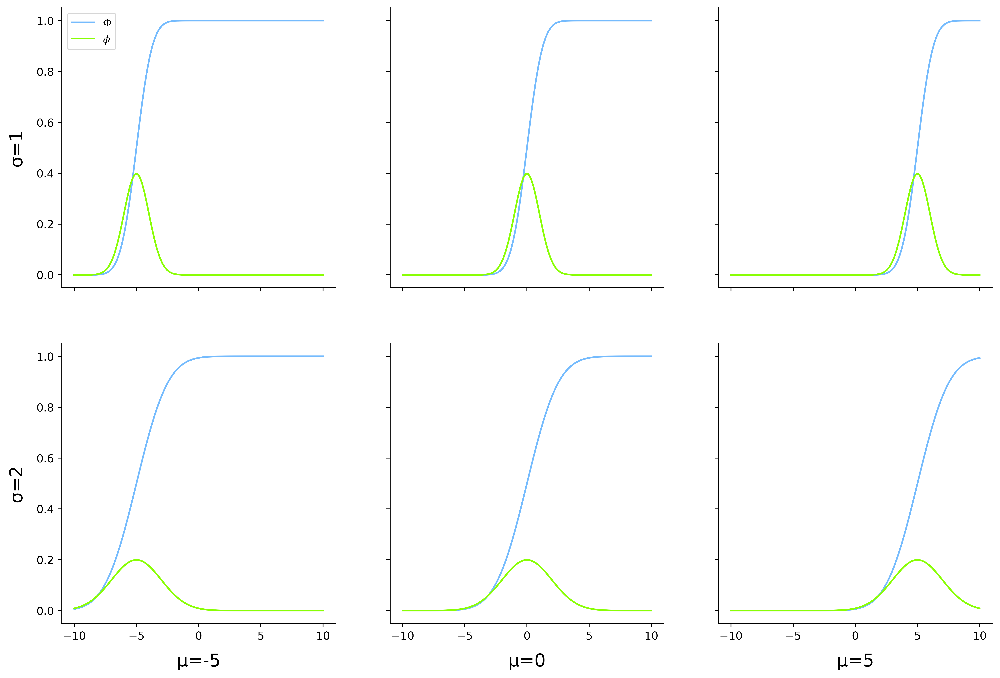

14.4. Il modello normale#
Fissato \(p \in [0, 1]\), per ogni \(n \in \mathbb N\) sia \(X_n \sim \mathrm B(n, p)\). In altre parole, \(X_n\) è una variabile aleatoria distribuita secondo una legge binomiale di parametri \(n\) e \(p\), che descrive il numero di successi ottenuti in \(n\) ripetizioni indipendenti di un esperimento di Bernoulli di parametro \(p\). Supponiamo di aumentare via via \(n\), per capire se abbia senso ragionare in termini di una distribuzione limite di \(X_n\). È evidente fin da subito che questo non può succedere, in quanto \(\mathbb E(X_n) = np\) e \(\mathrm{Var}(X_n) = np(1-p)\) e dunque, man mano che \(n\) aumenta, da una parte il centro della distribuzione si allontana sempre di più dall'origine e dall'altra la varianza aumenta, come si può facilmente verificare osservando i grafici delle funzioni di massa di probabilità visualizzati nella Figura 14.8.
Show code cell content
import matplotlib.pyplot as plt
import numpy as np
import scipy.stats as st
from myst_nb import glue
#plt.style.use('sds.mplstyle')
p = 0.5
ns = [10, 25, 50]
fig, axes = plt.subplots(1, 3, sharey=True, figsize=(15, 5))
for n, ax in zip(ns, axes):
x = np.arange(0, n+1)
B = st.binom(n, p)
y = B.pmf(x)
ax.vlines(x, 0, y, color='gray')
ax.plot(x, y, 'o', ms=5)
ax.set_xlim(0, 40)
ax.set_ylim(0, 0.26)
ax.set_xlabel(rf'$n={n}$')
plt.show()
glue("binomial-divergence", fig, display=True)

Fig. 14.8 Grafici della funzione di massa di probabilità di \(X_n\) per \(n = 10, 25 \text{ e } 50\).#
Possiamo però considerare una trasformazione di \(X_n\) che renda la distribuzione del risultato indipendente da \(n\) relativamente alla sua centralità e alla sua dispersione. Definiamo quindi \(Y_n\) come la versione standardizzata di \(X_n\):
Per le proprietà della trasformazione applicata, indipendentemente dal valore di \(n\) avremo che \(Y_n\) ha valore atteso nullo e varianza unitaria, come illustrato nella Figura 14.9. Questa figura mette in evidenza anche il fatto che, al crescere di \(n\), da una parte le specificazioni di \(Y_n\) tendono ad avvicinarsi l'un l'altra, e dall'altra il range di questa variabile aleatoria è un intervallo centrato nell'origine che diventa sempre più grande, comprendendo sia numeri positivi, sia numeri negativi. Diventa quindi ragionevole valutare l'ipotesi che, in analogia a quanto visto nel Paragrafo 14.5, la distribuzione di \(Y_n\) tenda a una distribuzione di tipo continuo che ha \(\mathbb R\) come supporto.
Show code cell content
fig, axes = plt.subplots(1, 3, sharey=True, figsize=(15, 5))
for n, ax in zip(ns, axes):
x = np.arange(0, n+1)
x_norm = (x - n*p) / (n * p * (1-p))**0.5
B = st.binom(n, p)
y = B.pmf(x)
ax.vlines(x_norm, 0, y, color='gray')
ax.plot(x_norm, y, 'o', ms=5)
ax.set_xlim(-7, 7)
ax.set_ylim(0, 0.26)
ax.set_xlabel(rf'$n={n}$')
plt.show()
glue("binomial-convergence", fig, display=True)

Fig. 14.9 Grafici della funzione di massa di probabilità di \(Y_n\) per \(n = 10, 25 \text{ e } 50\).#
Possiamo verificare empiricamente come, in effetti, man mano che \(n\) cresce \(Y_n\) tende a seguire una distribuzione continua descritta dalla funzione di densità di probabilità
il cui grafico è visualizzato nella Figura 14.10. Questa distribuzione, che definiremo rigorosamente più avanti, ha un ruolo particolarmente importante e viene chiamata distribuzione normale standard.
Show code cell content
fig, ax = plt.subplots()
def std_normal_pdf(x):
return 1 / (2 * np.pi)**0.5 * np.exp(- x**2 / 2)
x_gauss = np.linspace(-6, 6, 100)
y_gauss = std_normal_pdf(x_gauss)
plt.plot(x_gauss, y_gauss)
plt.yticks([0, 0.1, 0.2, 0.3, 0.4])
glue("normal-pdf", fig, display=False)

Fig. 14.10 Grafico della funzione di densità della distribuzione normale standard.#
Per verificare questo fatto è però necessario considerare un ulteriore passaggio intermedio: per ogni \(n\), \(Y_n\) è una variabile aleatoria discreta, mentre la distribuzione limite che stiamo considerando è continua. Nel primo caso, la somma delle altezze dei bastoncini nella Figura 14.9 è uguale a \(1\), mentre nel secondo è la regione di piano delimitata dall'asse delle ascisse e dalla curva mostrata in Figura 14.10 ad avere area unitaria. Per poter confrontare correttamente le distribuzioni in gioco dobbiamo pertanto o «trasformare» \(Y_n\) in una variabile aleatoria continua, oppure al contrario considerare un equivalente discreto della distribuzione normale standard.
Procediamo costruendo una distribuzione continua che preservi in qualche senso le probabilità che definiscono \(Y_n\). Più precisamente, per \(n\) fissato vogliamo definire una variabile aleatoria continua \(Y'_n\) in modo tale da «spalmare» la massa di probabilità di ogni specificazione \(y \in D_{Y_n}\) in un suo opportuno intorno \(I_y\), garantendo che \(\mathbb P(Y'_n \in I_y) = \mathbb P(Y_n = y)\). Ci sono vari modi per effettuare questa operazione: uno di quelli più naturali consiste nel centrare ogni \(I_y\) nella relativa specificazione \(y\), utilizzando un'ampiezza costante scelta in modo da garantire che la famiglia di questi intervalli sia una partizione del range di \(Y_n\). In altre parole, indicate con \(y_1, \dots, y_{n+1}\) le specificazioni di \(Y_n\), per ogni \(i = 1, \dots, n+1\) possiamo convertire il bastoncino della Figura 14.9 posizionato nell'ascissa \(y_i\) in una barra della medesima altezza la cui base è \([(y_{i-1} + y_i)/2, (y_i + y_{i+1})/2)\) (con ovvie estensioni per i casi estremi che riguardano \(y_1\) e \(y_{n+1}\)). A questo punto è possibile considerare la funzione che, dato \(x \in \mathbb R\) compreso in uno degli intervalli restituisce l'altezza della barra corrispondente, e il cui valore è zero per i punti rimanenti. L'area della regione delimitata dal grafico di questa funzione e dall'asse delle ascisse non è però uguale a \(1\), ma è possibile normalizzare la funzione stessa, dividendo ogni valore da essa restituito per la somma delle aree delle barre. Il risultato è una funzione \(f_n\) che può essere interpretata come densità di probabilità e quindi confrontata con \(\phi\): la Figura 14.11 mostra come effettivamente la prima funzione tenda a coincidere con la seconda all'aumentare di \(n\).
Show code cell content
def binomial(n, p=0.5):
B = st.binom(n, p)
x = np.arange(0, n+1)
x_norm = (x - n*p) / (n * p * (1-p))**0.5
y = B.pmf(x)
y_norm = y * (n * p * (1-p))**0.5
return x_norm, y_norm
fig, axes = plt.subplots(1, 3, sharey=True, figsize=(15, 5))
for n, ax in zip([6, 20, 80], axes):
x, y = binomial(n, p)
ax.bar(x, y, color='lightgray', edgecolor='gray',
width=1 / (n * p * (1-p))**0.5)
ax.plot(x_gauss, y_gauss)
ax.set_xlim(-6, 6)
ax.set_xlabel(rf'$n={n}$')
plt.show()
glue("normal-convergence", fig, display=True)

Fig. 14.11 Convergenza di \(f_n\) alla densità \(\phi\) della distribuzione normale standard. I grafici a barre visualizzano l'area delimitata da \(f_n\), per \(n = 10, 100 \text{ e } 250\), mentre la curva blu indica il grafico di \(\phi\).#
Il ragionamento informale seguito finora può essere rivisto in modo formale, in particolare considerando il teorema di de Moivre-Laplace.
Theorem 14.1 (Teorema di de Moivre-Laplace)
Dati \(n \in \mathbb N\) e \(p \in [0, 1]\), sia \(X \sim \mathrm B(n, p)\). Definita \(Y_n \coloneqq (X_n - np) / \sqrt{n p (1-p)}\), quando \(n \to +\infty\) la distribuzione di \(Y_n\) tende a quella normale standard.
La dimostrazione del teorema di de Moivre-Laplace, relativamente complessa, è riportata nel Paragrafo opzionale 14.4.2. In ogni caso, per quanto visto finora ha senso ragionare in termini di una variabile aleatoria \(X\) che abbia \(\phi\) come densità di probabilità, e più in generale parlare della distribuzione continua normale standard. Vi sono alcune proprietà di questa distribuzione che possiamo ricavare, sempre in modo informale. Innanzitutto (14.12) descrive effettivamente una densità di probabilità in quanto \(\phi\) è una funzione non negativa il cui integrale su \(\mathbb R\) è uguale a \(1\): dimostrarlo in modo formale richiede qualche conoscenza di analisi matematica avanzata (in particolare, la capacità di calcolare integrali doppi), ma possiamo convincerci facilmente che sia così, avendo verificato sperimentalmente che \(\phi\) è il limite di \(f_n\), e per ogni \(n\) quest'ultima funzione è stata costruita in modo che l'area tra il suo grafico e l'asse delle ascisse valga esattamente \(1\). Risulta inoltre facile calcolare il valore atteso di \(X\): se definiamo \(g(x) \coloneqq x \phi(x)\), per ogni \(x\) vale \(g(-x) = -g(x)\), essendo \(\phi\) una funzione pari (cioè una funzione simmetrica rispetto all'asse delle ordinate). Dunque
D'altra parte, la distribuzione di \(X\) è il limite di una serie di distribuzioni che sono tutte centrate in \(0\), in quanto le variabili aleatorie \(Y_n\) sono state ottenute standardizzando le corrispondenti \(X_n\). Seguendo un ragionamento analogo, è facile convincersi che la varianza e la deviazione standard di \(X\) sono uguali a \(1\). Da qui in avanti supporremo quindi che che \(\mathbb E(X) = 0\) e \(\mathrm{Var}(X) = 1\) (cosa che è effettivamente vera, e della quale i lettori interessati troveranno una dimostrazione nel Paragrafo opzionale 14.4.1). Le cose diventano più complicate quando si considera la funzione di ripartizione di \(X\), che viene indicata con il simbolo \(\Phi\). Ovviamente vale
ma non è possibile esprimere analiticamente questo integrale in termini di
funzioni che già conosciamo [1]. Per questo motivo \(\Phi\)
viene calcolata ricorrendo a processi di approssimazione numerica
[2]. Vedremo nel
Paragrafo 14.4.3 che questo
processo è fatto in modo trasparente dal modulo Python scipy.stats, che vale
la pena utilizzare nelle applicazioni pratiche. Ma possiamo per il momento
ottenere i valori di \(\Phi\) ricavando direttamente l'approssimazione degli
integrali coinvolti. In particolare, la funzione quad presente nel modulo
scipy.integrate permette di calcolare questa approssimazione, specificando
come argomenti la funzione integranda e gli estremi di integrazione. Per
esempio, nella cella che segue calcoliamo \(\Phi(0)\).
from scipy.integrate import quad
quad(lambda x: 1/(2*np.pi)**0.5 * np.exp(-x**2 / 2), -np.inf, 0)
(0.4999999999999999, 5.089095697715545e-09)
La funzione quad restituisce una coppia che contiene, rispettivamente,
l'approssimazione cercata e una stima dell'errore effettuato
nell'approssimazione stessa. Effettivamente è facile convincersi che il
risultato è corretto, in quanto essendo \(\phi\) simmetrica rispetto all'asse
delle ordinate e valendo il suo integrale su \(\mathbb R\) esattamente \(1\), deve
necessariamente essere \(\Phi(0) = \frac{1}{2}\). Possiamo quindi definire una
funzione cdf_normal che approssima i valori di \(\Phi\) e utilizzarla per
mostrare il suo grafico, sovrapponendolo a quello di \(\phi\) per ottenere il
risultato mostrato nella Figura 14.12.
def std_normal_cdf_scalar(x):
return quad(lambda u: 1/(2*np.pi)**0.5 * np.exp(-u**2 / 2), -np.inf, x)[0]
std_normal_cdf = np.vectorize(std_normal_cdf_scalar)
Show code cell content
x = np.linspace(-5, 5, 100)
y_cdf = std_normal_cdf(x)
y_pdf = std_normal_pdf(x)
fig, ax = plt.subplots()
plt.plot(x, y_cdf, label=r'$\Phi$')
plt.plot(x, y_pdf, label=r'$\phi$')
plt.legend()
glue("normal-cdf", fig, display=False)

Fig. 14.12 Grafico della funzione di ripartizione della distribuzione normale standard (in blu) sovrapposto al grafico della corrispondente funzione di densità di probabilità (in verde).#
Nelle appendici di molti libri di testo di probabilità e statistica,
soprattutto in quelli più datati, è inclusa una tabella che contiene le
approssimazioni di \(\Phi\) per dei particolari valori del suo argomento.
Ciò era fondamentalmente necessario quando non erano diffusi computer e
librerie come scipy, perché altrimenti non sarebbe stato possibile svolgere
esercizi, risolvere temi d'esame e soprattutto affrontare problemi pratici che
coinvolgono la distribuzione normale standard. Chiaramente, questo tipo di
tabella diventa inutile nel momento in cui possiamo scrivere ed eseguire
codice che ci permette di ottenere facilmente approssimazioni affidabili di
qualunque valore di \(\Phi\). Ci sono però situazioni nelle quali anche oggi
questa tabella può tornare utile, per esempio nel caso in cui non sia
possibile accedere a un computer durante un esame scritto. La cella seguente
mostra come generare una tabulazione di valori approssimati per \(\Phi\).
import pandas as pd
rows = []
most_significant = np.arange(0, 1.6, 0.1)
least_significant = np.arange(0, 0.1, 0.01)
for x_start in most_significant:
row = []
for x_end in least_significant:
row.append(x_start+x_end)
rows.append(std_normal_cdf(row))
df = (pd.DataFrame(rows, columns=least_significant, index=most_significant)
.round(4))
df
| 0.00 | 0.01 | 0.02 | 0.03 | 0.04 | 0.05 | 0.06 | 0.07 | 0.08 | 0.09 | |
|---|---|---|---|---|---|---|---|---|---|---|
| 0.0 | 0.5000 | 0.5040 | 0.5080 | 0.5120 | 0.5160 | 0.5199 | 0.5239 | 0.5279 | 0.5319 | 0.5359 |
| 0.1 | 0.5398 | 0.5438 | 0.5478 | 0.5517 | 0.5557 | 0.5596 | 0.5636 | 0.5675 | 0.5714 | 0.5753 |
| 0.2 | 0.5793 | 0.5832 | 0.5871 | 0.5910 | 0.5948 | 0.5987 | 0.6026 | 0.6064 | 0.6103 | 0.6141 |
| 0.3 | 0.6179 | 0.6217 | 0.6255 | 0.6293 | 0.6331 | 0.6368 | 0.6406 | 0.6443 | 0.6480 | 0.6517 |
| 0.4 | 0.6554 | 0.6591 | 0.6628 | 0.6664 | 0.6700 | 0.6736 | 0.6772 | 0.6808 | 0.6844 | 0.6879 |
| 0.5 | 0.6915 | 0.6950 | 0.6985 | 0.7019 | 0.7054 | 0.7088 | 0.7123 | 0.7157 | 0.7190 | 0.7224 |
| 0.6 | 0.7257 | 0.7291 | 0.7324 | 0.7357 | 0.7389 | 0.7422 | 0.7454 | 0.7486 | 0.7517 | 0.7549 |
| 0.7 | 0.7580 | 0.7611 | 0.7642 | 0.7673 | 0.7704 | 0.7734 | 0.7764 | 0.7794 | 0.7823 | 0.7852 |
| 0.8 | 0.7881 | 0.7910 | 0.7939 | 0.7967 | 0.7995 | 0.8023 | 0.8051 | 0.8078 | 0.8106 | 0.8133 |
| 0.9 | 0.8159 | 0.8186 | 0.8212 | 0.8238 | 0.8264 | 0.8289 | 0.8315 | 0.8340 | 0.8365 | 0.8389 |
| 1.0 | 0.8413 | 0.8438 | 0.8461 | 0.8485 | 0.8508 | 0.8531 | 0.8554 | 0.8577 | 0.8599 | 0.8621 |
| 1.1 | 0.8643 | 0.8665 | 0.8686 | 0.8708 | 0.8729 | 0.8749 | 0.8770 | 0.8790 | 0.8810 | 0.8830 |
| 1.2 | 0.8849 | 0.8869 | 0.8888 | 0.8907 | 0.8925 | 0.8944 | 0.8962 | 0.8980 | 0.8997 | 0.9015 |
| 1.3 | 0.9032 | 0.9049 | 0.9066 | 0.9082 | 0.9099 | 0.9115 | 0.9131 | 0.9147 | 0.9162 | 0.9177 |
| 1.4 | 0.9192 | 0.9207 | 0.9222 | 0.9236 | 0.9251 | 0.9265 | 0.9279 | 0.9292 | 0.9306 | 0.9319 |
| 1.5 | 0.9332 | 0.9345 | 0.9357 | 0.9370 | 0.9382 | 0.9394 | 0.9406 | 0.9418 | 0.9429 | 0.9441 |
Il risultato ottenuto tabula i valori di \(\Phi(x)\) per tutti i valori \(x\) che vanno da \(0\) a \(1.59\) a scatti di un centesimo. La tabella si legge nel modo seguente: il valore contenuto nella cella che si trova nella \(i\)-esima riga e nella \(j\)-esima colonna è un'approssimazione per \(\Phi(i+j)\). Per esempio, l'ultimo valore in basso a sinistra corrisponderà a \(\Phi(1.5)\), quello appena alla sua destra corrisponderà a \(\Phi(1.51)\) e così via [3]. Nonostante la funzione di ripartizione della distribuzione normale standard abbia valori non nulli anche per argomenti negativi, la tabella è stata generata (esattamente come nei libri di testo che di norma la contengono) considerando solo valori non negativi. Ciò viene fatto per risparmiare spazio, in quanto i valori che corrispondono ad argomenti negativi si possono facilmente ricavare da quelli tabulati, sfruttando il seguente risultato.
Lemma 14.4
Per ogni \(x \in \mathbb R\) si ha \(\Phi(-x) = 1 - \Phi(x)\).
Proof. Data una variabile aleatoria \(X\) con distribuzione normale standard, sia \(x \in \mathbb R^+\). Dalla simmetria di \(\phi\) rispetto all'asse delle ordinate, come evidenziato nella Figura 14.13, si ottiene
L'estensione ai casi rimanenti è banale.
Show code cell content
fig, ax = plt.subplots()
x_start = 1
x_fill = np.linspace(-5, -x_start, 50)
y_fill = std_normal_pdf(x_fill)
plt.fill_between(x_fill, 0, y_fill, color='lightgray')
x_fill = np.linspace(x_start, 5, 50)
y_fill = std_normal_pdf(x_fill)
plt.fill_between(x_fill, 0, y_fill, color='lightgray')
plt.plot(x, y_pdf)
plt.annotate(r'$=\Phi(-x)$', xy=(-1.5, 0.03), xytext=(-3.5, 0.2),
arrowprops={'arrowstyle': '->', 'ec': 'black'},
va='center', fontsize=14)
plt.annotate(r'$=\Phi(-x)$', xy=(1.5, 0.03), xytext=(2, 0.2),
arrowprops={'arrowstyle': '->', 'ec':'black'},
va='center', fontsize=14)
plt.xticks([-x_start, x_start], [r'$-x$', '$x$'], fontsize=14)
plt.yticks([])
glue("normal-symmetry", fig, display=False)

Fig. 14.13 Relazione che lega la simmetria di \(\phi\) rispetto all'asse delle ordinate alla proprietà \(\Phi(-x) = 1 -\Phi(x)\).#
Fissiamo ora \(\mu, \sigma \in \mathbb R\), con \(\sigma > 0\), e definiamo \(Y \coloneqq \mu + \sigma X\). Sfruttando le proprietà di valore atteso e varianza e ricordando quanto appena ricavato, si verifica facilmente che
Inoltre
e quindi la funzione di densità di probabilità di \(Y\) ha la seguente forma analitica:
Pertanto, \(\mu\) e \(\sigma\) parametrizzano una distribuzione di probabilità estendendo la distribuzione normale standard. Le distribuzioni in questa famiglia vengono pertanto dette normali.
Definition 14.7 (La famiglia delle distribuzioni normali)
Dati \(\mu \in \mathbb R\) e \(\sigma \in \mathbb R^+\), la distribuzione esponenziale di parametri \(\mu\) e \(\sigma\) è definita dalla funzione di densità di probabilità
o in modo equivalente dalla funzione di ripartizione
Per indicare che una variabile aleatoria \(X\) segue una distribuzione normale utilizzeremo l'abbreviazione \(X \sim \mathrm N(\mu, \sigma)\), dove \(\mu\) e \(\sigma\) sono i valori per i parametri della distribuzione stessa. L'insieme di tutte le distribuzioni normali al variare dei possibili valori dei due relativi parametri viene detta famiglia delle distribuzioni normali.
La distribuzione normale standard è una particolare distribuzione normale: quella, ovviamente, per la quale \(\mu = 0\) e \(\sigma = 1\). La Figura 14.14 mostra i grafici delle funzioni di densità di probabilità e di ripartizione della distribuzione normale per \(\mu \in \{-5, 0, 5\}\) e \(\sigma \in \{1, 2\}\). È possibile notare come tutti i grafici su una stessa riga evidenziano la stessa dispersione ma una centralità diversa: in particolare, il valore atteso della distribuzione si sposta in avanti man mano che si considerano le figure da sinistra a destra. Analogamente, i grafici su una stessa colonna hanno la medesima centralità ma differenti dispersioni, e la varianza aumenta andando dall'alto verso il basso nella figura.
Show code cell content
def normal_pdf(x, mu, sigma):
return std_normal_pdf((x - mu) / sigma) / sigma
def normal_cdf(x, mu, sigma):
return std_normal_cdf((x - mu) / sigma)
mus = [-5, 0, 5]
sigmas = [1, 2]
params = [[(mu, sigma) for mu in mus] for sigma in sigmas]
x = np.linspace(-10, 10, 100)
fig, axes = plt.subplots(2, 3, figsize=(15, 10), sharex=True, sharey=True)
for r, (ax_row, param_row) in enumerate(zip(axes, params)):
for c, (ax, (mu, sigma)) in enumerate(zip(ax_row, param_row)):
pdf_values = normal_pdf(x, mu, sigma)
cdf_values = normal_cdf(x, mu, sigma)
ax.plot(x, cdf_values, label=r'$\Phi$')
ax.plot(x, pdf_values, label=r'$\phi$')
if r == 1:
ax.set_xlabel(f'µ={mu}')
if c == 0:
ax.set_ylabel(f'σ={sigma}')
if r == 0 and c == 0:
ax.legend()
glue("normal-graphs", fig, display=False)

Fig. 14.14 Grafici delle funzioni di densità di probabilità (in verde) e di ripartizione (in blu) di differenti distribuzioni norali. Gli assi delle ascisse e delle ordinate indicano rispettivamente i valori dei parametri \(\mu\) e \(\sigma\).#
Va notato che anche il calcolo della ripartizione di una generica distribuzione normale richiede di valutare un integrale di cui non si conosce la forma analitica, ma applicando (14.13) è possibile ottenerne i valori a partire dalla tabulazione di \(\Phi\). Chiaramente, questo aspetto cade in secondo piano per tutte le applicazioni nelle quali è possibile utilizzare un computer.

Fig. 14.15 Ritratto di Carl Friedrich Gauss a 50 anni, esseguito da Siegfried Detlev Bendixen (immagine di pubblico dominio).#
Nomenclatura
Nella letteratura si usano gli aggettivi normale e gaussiano in modo quasi sempre intercambiabile, così che alcuni testi parlano di distribuzioni normali e normali standard, variabili aleatorie normali, densità normali e così via, mentre in altre fonti si trovano le diciture «distribuzione gaussiana» o «gaussiana standard», «variabile aleatoria gaussiana», «densità gaussiana» eccetera. In alcuni casi viene fatta però una rilevante differenziazione (che questo testo non adotta), definendo come distribuzione normale quella che qui ho chiamato «distribuzione normale standard» e usando l'aggettivo «gaussiana» per riferirsi in generale a questo tipo di distribuzione. In altre parole, in questi testi la distribuzione normale è un tipo specifico di distribuzione gaussiana, e precisamente quella con media nulla e deviazione standard unitaria.
Il termine gaussiano fa riferimento a Carl Friedrich Gauss (di cui la Figura 14.15 mostra un ritratto), una delle figure più eminenti nella storia della matematica. All'inizio del 1800 Gauss dimostrò, tra le altre cose, che la forma analitica della densità normale era l'unica che permettesse di risolvere un particolare problema (quello della stima della centralità in una popolazione, che affronteremo nel Paragrafo 15.2), e osservò come questa distribuzione fosse in accordo con gli errori di predizione in ambito astronomico. La paternità di questa distribuzione spetta però, come spesso accade, a più studiosi: in particolare, le prime osservazioni sul comportamento della distribuzione binomiale al crescere del parametro \(n\) sono state fatte da Abraham de Moivre nella prima metà del 1700, e Pierre-Simon de Laplace ha sviluppato queste osservazioni verso la fine dello stesso secolo, approssimando l'errore compiuto nel sostituire una distribuzione binomiale con una gaussiana e calcolando
Sebbene venga fatto risalire sempre a Gauss, l'aggettivo normale è stato utilizzanto estensivamente dai matematici per riferirsi alla distribuzione gaussiana solo a partire dal 1900.
Non è un caso che l'aggettivo normale sia stato usato per definire i dati per le cui frequenze vale la regola empirica introdotta nel Paragrafo 7.4. Le percentuali indicate da questa regola, in effetti, corrispondono esattamente alla probabilità di osservare un valore della distribuzione normale standard che dista dal suo valore atteso al più una, due o tre deviazioni standard, rispettivamente.
def prob_within_std(s):
return normal_cdf(s, 0, 1) - normal_cdf(-s, 0, 1)
for s in np.arange(1, 4):
print(f'sigma={s}, p={prob_within_std(s):.3f}')
sigma=1, p=0.683
sigma=2, p=0.954
sigma=3, p=0.997
Le distribuzioni normali godono di una serie di interessanti proprietà, descritte di seguito.
Theorem 14.2
Siano \(X \sim \mathrm N(\mu_X, \sigma_X)\), \(Y \sim \mathrm N(\mu_Y, \sigma_Y)\) e \(a, b \in \mathbb R\).
Definita \(Y \coloneqq a X + b\), si ha \(Y \sim \mathrm N(a \mu_X + b, a \sigma_X)\).
Definita \(Z \coloneqq X + Y\), vale \(Z \sim \mathrm N \left(\mu_X + \mu_Y, \sqrt{\sigma_X^2 + \sigma_Y^2} \right)\).
Proof. Per quanto riguarda la prima parte, vale
e pertanto
che implica la tesi. La seconda parte è dimostrata nel Paragrafo opzionale 14.4.1.
Da questo teorema si ricava un risultato che sarà particolarmente utile nella parte di questo libro dedicata alla statistica inferenziale.
Corollary 14.1
Siano \(X_1, \dots, X_n\) delle variabili aleatorie indipendenti, dove per ogni \(i = 1, \dots, n\) si ha \(X_i \sim \mathrm N(\mu_i, \sigma_i)\). Dati \(a_1, \dots, a_n, b \in \mathbb R\) e definita
\(Y\) è distribuita secondo una legge normale con valore atteso
e deviazione standard
Proof. Segue per induzione dal Theorem 14.2.
14.4.1. Momenti della distribuzione normale (*)#
Calcolare la funzione generatrice dei momenti per la distribuzione normale richiede un po' di perizia. Partendo dalla definizione e ponendo \(X \sim \mathrm N(\mu, \sigma)\), si ha
Sfruttando le proprietà delle potenze è possibile scrivere
così che nell'esponente all'interno dell'integrale è possibile completare lo sviluppo di un quadrato nel modo seguente:
Il valore atteso di \(X\) sarà dunque
e analogamente
così che \(\mathrm{Var}(X) = \mu^2 + \sigma^2 - \mu^2 = \sigma^2\). Ciò dimostra che i due parametri della distribuzione di una variabile aleatoria normale equivalgono rispettivamente al suo valore atteso e alla sua deviazione standard, e in particolare che una variabile aleatoria normale standard ha valore atteso nullo e deviazione standard e varianza unitarie. Si può inoltre facilmente verificare che, essendo \(Y \coloneqq X - \mu \sim \mathrm N(0, \sigma)\) e \(m_Y(t) = \mathrm e^ {\sigma^2 t^2 / 2}\), vale
da cui si ricava che, come già sappiamo,
e dall'ultima relazione segue che la curtosi di una qualsiasi distribuzione normale è uguale a \(\mu_4 / \sigma^4 - 3 = 0\).
La funzione generatrice dei momenti permette di dimostrare facilmente anche la seconda parte del Corollary 14.1, in quanto, date due variabili aleatorie indipendenti \(X \sim \mathrm N(\mu_X, \sigma_X)\) e \(Y \sim \mathrm N(\mu_Y, \sigma_Y)\) e posto \(Z \coloneqq X + Y\) si ha
che è la funzione generatrice dei momenti di una distribuzione che ha \(\mu_X + \mu_Y\) per valore atteso e \(\sigma_X^2 + \sigma_Y^2\) per varianza.
14.4.2. Il teorema di de Moivre-Laplace (*)#
Dimostrare in modo matematicamente impeccabile il Theorem 14.1 richiede alcune conoscenze avanzate che vanno al di fuori dello scopo di questo volume. Di seguito riporto una dimostrazione che, pur introducendo delle approssimazioni rilevanti, permette a chi è interessato ad approfondire l'argomento di convincersi della validità di questo teorema.
Consideriamo le variabili aleatorie \(X_n\) e \(Y_n\) definite nell'enunciato del teorema: la relazione che le lega implica che la prima variabile assume una specificazione \(x \in \{0, \dots n\}\) se e solo se la seconda assume una specificazione \(y\) tale che
e ovviamente varrà
Applicando a questa formula l'approssimazione di Stirling per il fattoriale si ottiene
dove l'ultimo passaggio è stato ottenuto elevando il prodotto esterno alla radice quadrata al suo logaritmo naturale e sfruttando le proprietà dei logaritmi. Semplifichiamo i conti che seguono tralasciando il fattore sotto frazione e consideriamo separatamente i termini \(A\) e \(B\) che occorrono all'esponente. Per quanto riguarda il primo, la relazione (14.14) implica
così che considerando lo sviluppo di \(\ln (1 + x)\) in serie di Taylor centrata in \(0\) e troncata al termine di secondo grado, ovvero \(\ln (1 + x) \approx x - \frac{x^2}{2}\), svolgendo i conti e trascurando i termini di grado superiore al secondo possiamo ulteriormente semplificare l'espressione in
Procedendo in modo analogo, \(B\) si approssima nel modo seguente:
Pertanto, a meno del fattore che abbiamo trascurato,
dove le approssimazioni effettuate diventano più precise all'aumentare di \(n\). Ora, per \(n \to +\infty\) possiamo approssimare la distribuzione di \(Y_n\) con una distribuzione continua, la cui densità si determina normalizzando il secondo membro di (14.15), ovvero dividendolo per il valore
Calcolare questo integrale in modo analitico richiede la conoscenza di argomenti avanzati di analisi matematica, ma è possibile seguire il seguente ragionamento informale. Abbiamo visto alcune argomentazioni che suggeriscono che l'integrale di \(\phi\) su \(\mathbb R\) valga \(1\). Possiamo rafforzare questa intuizione ricorrendo all'approssimazione di questo integrale usando le formule di quadratura.
quad(lambda u: 1/(2*np.pi)**0.5 * np.exp(-u**2 / 2), -np.inf, np.inf)
(0.9999999999999998, 1.017819139543109e-08)
Possiamo quindi ragionevolmente supporre che
e dunque ottenere la funzione di densità che approssima la distribuzione di \(Y_n\) per \(n \to +\infty\) come
che coincide con la densità \(\phi\) della distribuzione normale standard.
14.4.3. Implementazione del modello normale#
La distribuzione normale è implementata in scipy.stats dalla funzione
norm, che restituisce un oggetto della classe che la libreria utilizza
per codificare le variabili casuali. Gli argomenti loc e scale permettono
di specificare, rispettivamente, valore atteso e deviazione standard della
distribuzione (ma è possibile omettere i nomi degli argomenti, a patto di
specificare prima il valore atteso e poi la deviazione standard).
A partire da un oggetto che descrive una distribuzione normale è possibile
invocare i metodi pdf, cdf, ppf e rv rispettivamente per calcolare la
funzione di densità di probabilità e di ripartizione, per estrarre i quantili
e per simulare l'estrazione di specificazioni.